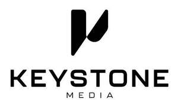

Trade Mark Journal No.2025/030 25 July 2025
UK00004183262 2 April 2025 (35,41,42)
Mark 1
Mark 2

- Class 35
- Advertising, marketing and promotional services; business promotion services; marketing; product marketing; internet marketing; online marketing; video marketing; video marketing services; advertising and marketing services provided by means of social media; marketing consultancy; marketing research; marketing analysis; marketing strategy services; video and film production (advertisement); video and film production for marketing and advertising purposes; video and film production for marketing and advertising purposes for financial product and service providers; video and film production for publicity purposes; producing promotional videos, videotapes, video discs, and audio visual recordings; development of social media campaigns; copywriting; copywriting for advertising and promotional purposes; writing of publicity texts and taglines; brand naming; brand messaging and copywriting; scriptwriting for advertising purposes; publication of advertising texts; advertising; advertising services provided via the internet; digital advertising services; direct mail advertising; compilation of direct mailing lists; direct advertising services; radio advertising; advertising copywriting; creating advertising material; updating advertising material; design of advertising materials; preparing promotional and merchandising material for others; preparing promotional and merchandising material for others in the field of financial products and services; advisory services relating to promotional activities; distribution of promotional material; office functions; business management and consultancy services; business consultancy; business consultancy in relation to commercial video material and content; business consultancy in relation to commercial audio material and content; business consultancy for financial services in relation to commercial video material and content; business consultancy for financial services in relation to commercial audio material and content; arranging of presentations for advertising, trade, business and commercial purposes; search engine optimisation services; search engine marketing services; collection of data; data management services; business research; consumer research; consumer analysis; consumer profiling services; data analysis, compilation, computation and processing services relating to marketing information including for customer experience audits, analytics, benchmarking, and customer journey mapping; business analysis and information services, and market research; conducting business and market research surveys; analysis of business and marketing trends; marketing campaigns; marketing forecasting; customer experience evaluation for business purposes; customer relationship management; brand consultancy services; brand imagery consulting services; brand evaluation services; brand positioning services; brand strategy services; brand creation services; advertising services to create corporate and brand identity; arranging and conducting of workshops, seminars, and conferences in relation to brand consultancy; advisory services relating to corporate and brand identity; business information services; organisation, operation and supervision of loyalty and incentive schemes; all of the aforesaid services in the field of creation, production, project management and direction of custom made video, audio, image, media and literary content for businesses, entrepreneurs, non-profit organisations and charities, and provision of information, consultancy and advisory services thereto; none of the aforesaid services being in relation to the legal field; none of the aforesaid relating to promoting the services of third party content providers through content publisher platforms, blogs, Real Simple Syndication (RSS) feeds, news mediums and magazines, publishing, syndication, management, and monetization of content delivered via the Internet and other computer networks in text, audio, video, Real Simple Syndication (RSS) and other formats, Real Simple Syndication (RSS) feed management services, and content syndication management services for content publisher platforms, blogs, social networks, and other Internet websites.
- Class 41
- Video and film production services; film production; video production; production of video content; video presentation; video and audio production services; multimedia video production services; video editing; film editing; video entertainment services; videotape productions; videotape film production, production of video recordings; production of video films; production of training videos; production of commercial videos; production of commercial videos for businesses in the field of financial services; production of corporate videos; production of business videos; production of musical videos; production of pre-recorded video films; production of sound and video recordings; audio, video and photographic production; film and videotape production; services for the production of entertainment in the form of video; post editing services in the field of music, video and film; audio production; audio recording and production services; audio recording services; recording of voiceovers; audio entertainment services; production of audio recordings; rental of audio discs and tapes; rental of audio equipment; production of audio programs; providing audio studios; editing of audio recordings; script writing services; scriptwriting for voiceovers; editing of written texts; post-production editing services in the field of music and sound recordings; proof reading of manuscripts; production of live entertainment events; arranging of presentations for educational, entertainment and cultural purposes; animation production services; entertainment services; electronic publishing services; electronic publishing services in relation to marketing, advertising, public relations, and promotional materials; entertainment; providing online videos; providing online videos in relation to marketing, advertising, public relations, and promotion; media content creation; media content creation for businesses in the field of financial services; production of animation; animation production services; motion graphic animation production; CGI animation production; production of animated cartoons; arranging, planning, organising and conducting of events, online events, workshops, seminars, symposiums and conferences in the fields of cinematography, creative direction, audio recording, music, photography, videography, and video editing; arranging and conducting of workshops, seminars, and conferences in the fields of corporate cinematography, creative direction, music, photography, videography, and video editing; arranging, planning, organising and conducting of events, online events, workshops, seminars, symposiums and conferences in the fields of corporate cinematography, creative direction, audio recording, music, photography, videography, and video editing; video production, cinematic direction, creative direction and management consultancy; video production, cinematic direction, creative direction and management consultancy for businesses in the field of financial services; educational services in the field of personal finance and financial literacy; providing courses, workshops, and seminars on budgeting, saving, investing, and debt management; development and dissemination of educational materials in the field of finance; providing educational information relating to financial wellbeing and consumer finance; providing training and educational courses in the field of video and animation production, creation and editing; providing training and educational courses in the field of corporate video and animation production, creation and editing; training services in relation to money management and financial planning; production and publication of educational and training materials; production and publication of educational and training materials in relation to video production; production and publication of educational and training materials in relation to video production for businesses in the field of financial services; educational courses and training in relation to sales and marketing including digital sales and video marketing; educational courses and training in relation to public relations and introduction services; entertainment services; production and publication of business and management training consultancy services; Creation of tone of voice for others; voiceover services; all of the aforesaid services in the field of creation, production, project management and direction of custom made video, audio, image, media and literary content for businesses, entrepreneurs, non-profit organisations and charities, and provision of information, consultancy and advisory services thereto; none of the aforesaid services being in relation to private tutoring.
- Class 42
- Design services; design of audio-visual creative works; design of animation and special-effects; animation and special-effects design services; visual design; visual design services; sound design services; providing graphic and multimedia design services for the purpose of promoting the goods and services of others; commercial art design; creative direction and consultancy services; design services for display systems for presentation and advertising purposes; animation design; providing online non-downloadable videos, tutorials, and resources for financial education; computer services, namely, electronic imaging of photographs, artwork, designs, drawings, and paintings; hosting of digital content, namely, online journals and blogs; creating and maintaining web blogs for others; creation, development and design of computer programs and computer software; platform as a service; platform as a service featuring software platforms for processing images, graphics, audio, video and text; software as a service; software as a service featuring computer software for use in relation to the production of video, audio and film content for online distribution; design of a software platform; software engineering services; software consultancy services; software design and development; software maintenance services; video marketing software solutions, namely, providing temporary use of online non-downloadable software for video marketing; implementation, maintenance, rental, outsourcing, and care of computer programs and computer software; updating and maintenance of computer programs and computer software; hosting websites of others; hosting, developing, and managing a website for online introduction agency services; computer programming; installation, maintenance, and repair of computer software; technological consultation services; computer consultancy services; consultation services relating to computer hardware; consultation services relating to computer software; brand design services; brand development services; brand recognition development services; brand awareness services; corporate identity creation services; creative direction services for brand design and concepts; advice, consultation, and information services in relation to video and audio design; graphic design services; design of web pages; consultancy with regard to web page design; creating, designing, and maintaining websites; drawing and commissioned writing; operating search engines; provision of internet search engines; research in the field of social media; networked content creation and distribution which allows for the creation of media; graphic design services; logo design services; design of brand names; web hosting, content creation, and search services; graphic design and content creation relating thereto; brand design services; design of printed matter, design of printed material; designing websites for advertising purposes; website design services; mobile application design; animation and special effects design for others; electronic data storage; hosting of digital content, namely, online journals and blogs; providing temporary use of non-downloadable computer software for use in the creation and publication of online journals and blogs; data mining; electronic data storage; all of the aforesaid services in the field of creation, production, project management and direction of custom made video, audio, image, media and literary content for businesses, entrepreneurs, non-profit organisations and charities, and provision of information, consultancy and advisory services thereto; none of the aforesaid services being directly in relation to global retirement platforms.
Keystone Media Limited
Representative: Trade Mark Wizards Limited